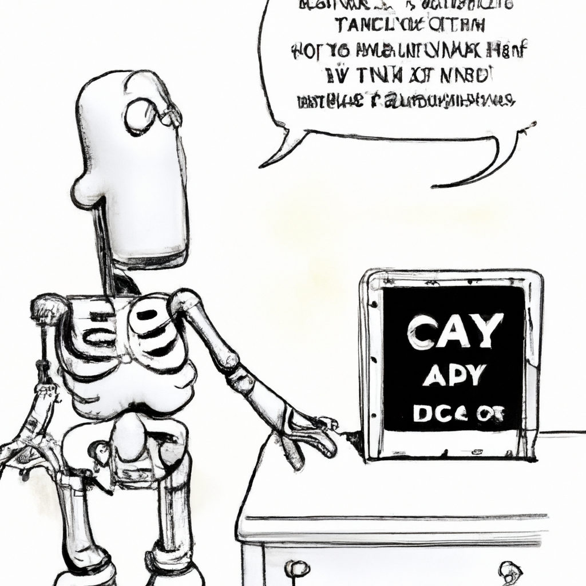

Why AI will never replace the radiologist
In recent years, there has been a lot of discussion about the potential of machine learning to replace radiologists. While it's true that machine learning can help radiologists in their work, there are several reasons why AI will never fully replace the radiologist.
First and foremost, the diagnosis of medical images is a complex and nuanced task that requires an understanding of anatomy and pathology. Machines can be trained to recognize patterns and detect abnormalities, but they can't truly understand the nuances of human health and disease. The radiologist's experience and expertise is essential in making an accurate diagnosis.
Second, machines may not always be able to make the same decisions that a radiologist would make. While machine learning algorithms can be trained to detect abnormalities, there are certain cases where the radiologist may make different decisions based on their experience and expertise.
Third, machines can't replace the personal relationship between the radiologist and the patient. The radiologist is responsible for providing the patient with an accurate diagnosis, along with guidance and support in their treatment. This is something that machines can't replace.
Overall, while machine learning can assist radiologists in their work, it will never be able to fully replace the radiologist. The radiologist's expertise and experience are essential in making an accurate diagnosis, and machines can't replace the personal relationship between the patient and the radiologist.